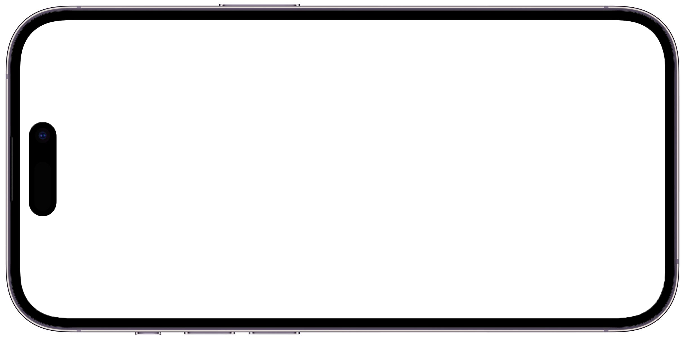
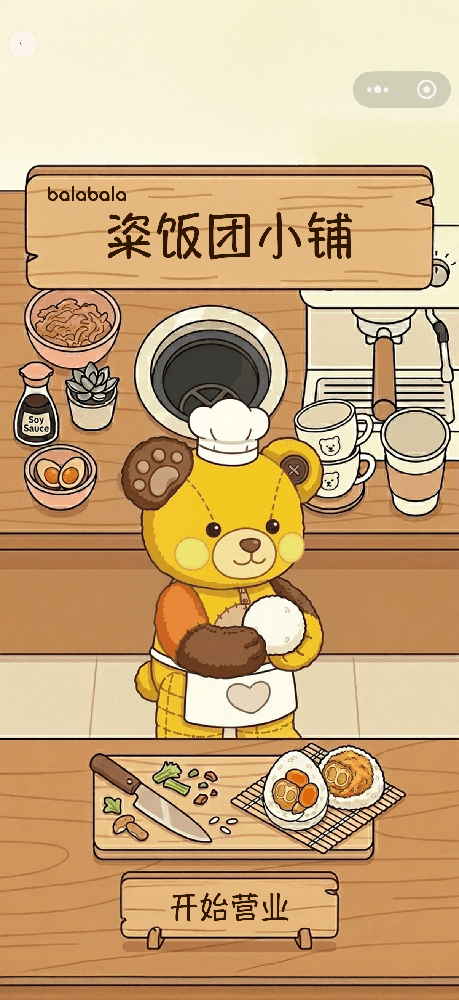

一、 核心基建：巴拉智绘 (Agent) 正式启动
平台立项与研发推进
本月，AI 辅助服装设计与资产聚合平台「巴拉智绘」正式启动研发。系统将重塑现有设计与生产流，实现从“灵感”到“成衣效果”的全面跃升。
极速增效：线稿即成衣
单款设计周期将从传统的 2周 压缩至 10-30分钟。
资产盘活：沉睡数据数字化
供应链 5TB 的静态面料、版型数据将转化为支持自然语言语义检索的“活资产”。
显著降本：释放隐性人力
预计规避实体打样返工损耗并替代外部高价SaaS，等效扩编30%以上设计产能。
预留位：系统演示视频/架构图
16:9 | zhihui_demo.mp4 (或 .png)
二、 业务赋能：3D与视觉创新落地
用品组：商品动态展示视频
为用品组制作了首支帽子动态展示视频，提升商品详情页转化力。后续将继续补充另外 2 支视频。
预留位：帽子展示视频
16:9 | accessories_hat.mp4
用品组：Ghost Model 3D试拍
尝试引入 3D 效果的 Ghost Model（隐形模特）拍摄技术，以替代传统平面拍摄，提供更立体真实的质感。
拖拽滑动查看完整 8 张图
Home线：袜子与吊牌物理模拟
为 Home 产品线完成了袜子及配套吊牌的高保真物理模拟打样，减少实物打样成本。
拖拽滑动查看完整 25 张图
面料组：软软牛仔宣传视频
为面料组专项制作的“软软牛仔”系列短视频，适用于小红书、抖音等竖屏社交媒体渠道传播展示。
预留位：软软牛仔视频
9:16 | soft_denim.mp4
三、 互动营销：品牌资产线上化
滨江快闪店交互地图
交互已上线响应品牌形象部需求，为滨江线下快闪店量身定制了线上交互地图。结合打通线上引流与线下导览闭环。

在手机屏内左右滑动浏览
巴拉巴拉 IP 微信小游戏
备案审核中基于核心 IP 形象开发专属微信小游戏，目前研发与内测已完成，正处于国家有关部门的小游戏备案审核阶段。
16:9 | minigame_banner.png

竖屏 | minigame_shot.png